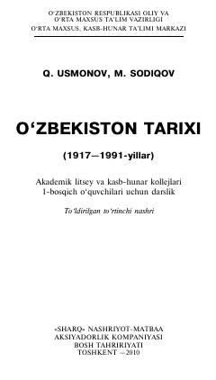

OTAkademik litsey va kollejlar uchun Oʻzbekistonning sovet davri tarixi boʻyicha darslik.
Mazkur darslik akademik litsey va kasb-hunar kollejlari 1-bosqich oʻquvchilari uchun moʻljallangan boʻlib, Oʻzbekistonning 1917—1991-yillardagi sovet davri tarixini, ijtimoiy-siyosiy, iqtisodiy va madaniy jarayonlarni yoritadi. Kitobda mustabid sovet tuzumi davridagi murakkab va ziddiyatli voqealar, xalqimizning ozodlik yoʻlidagi kurashlari hamda bunyodkorlik ishlari ilmiy-pedagogik asosda bayon etilgan.